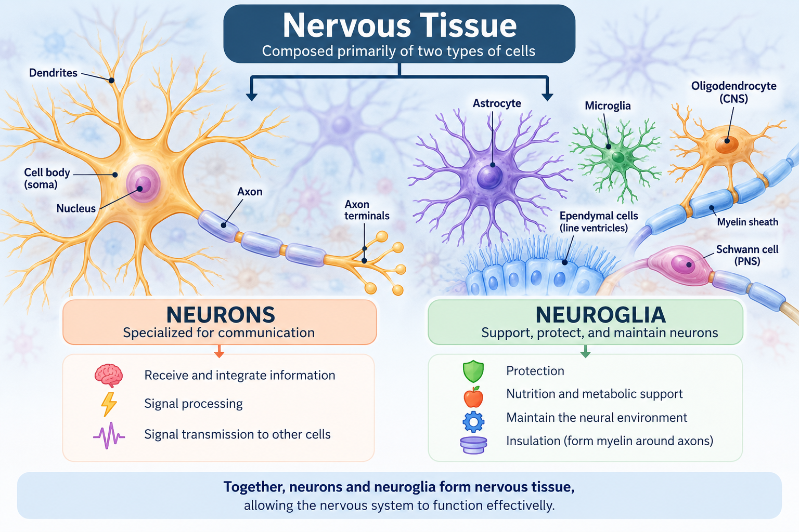
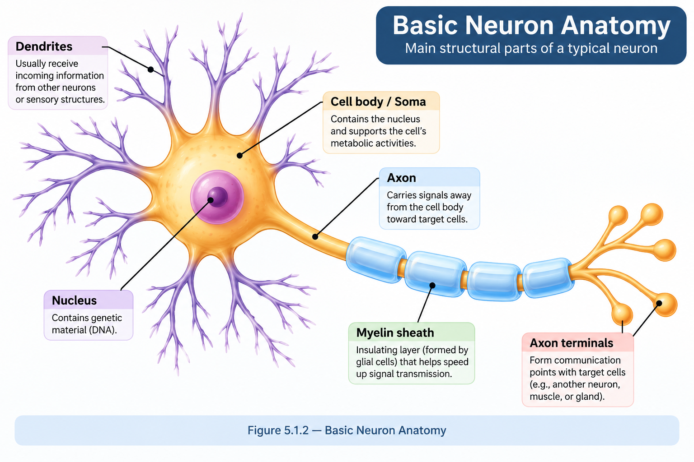
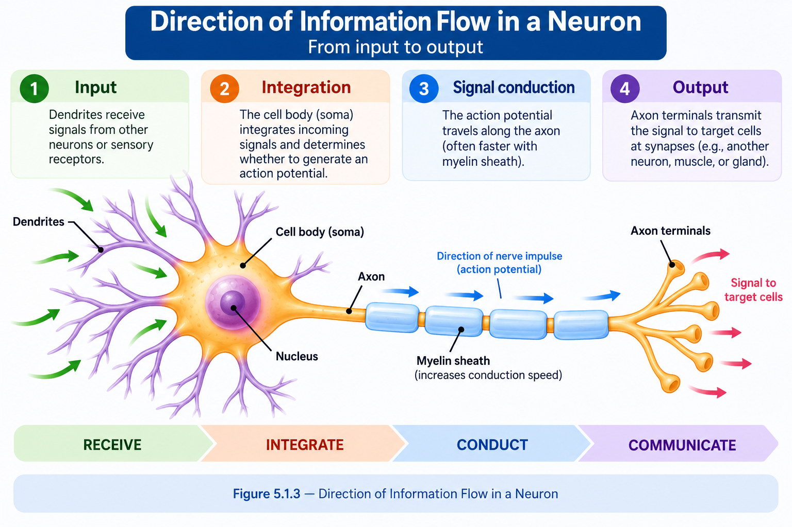
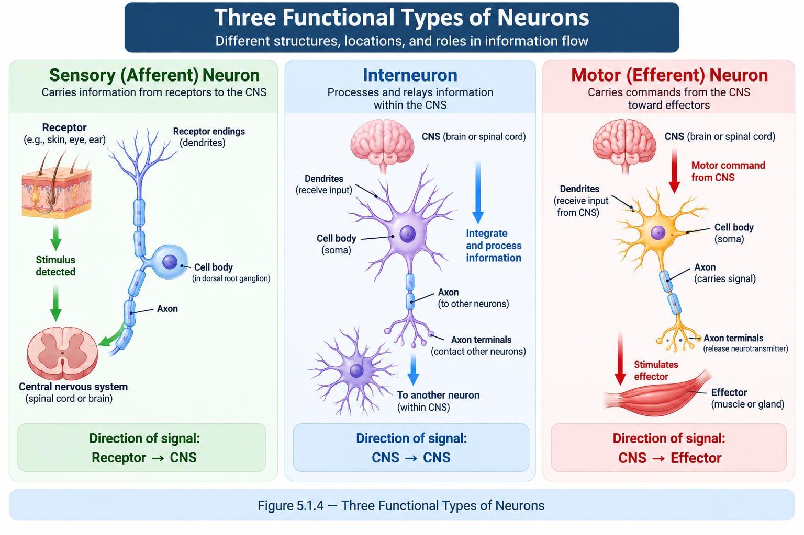
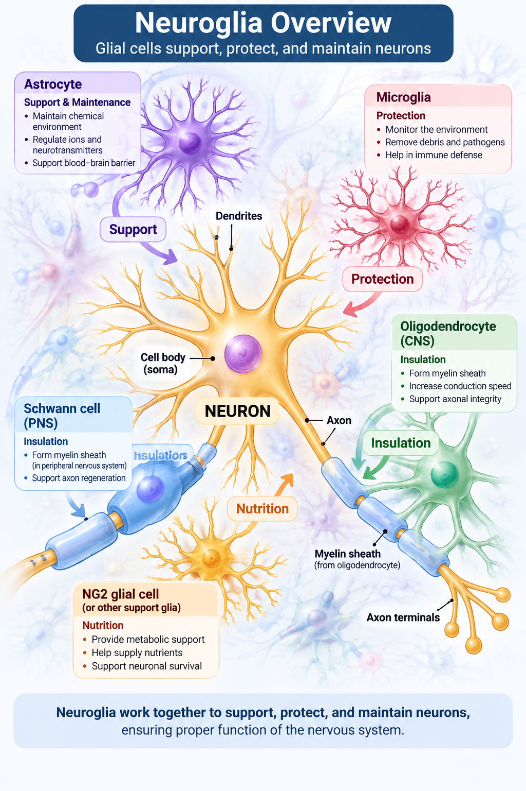
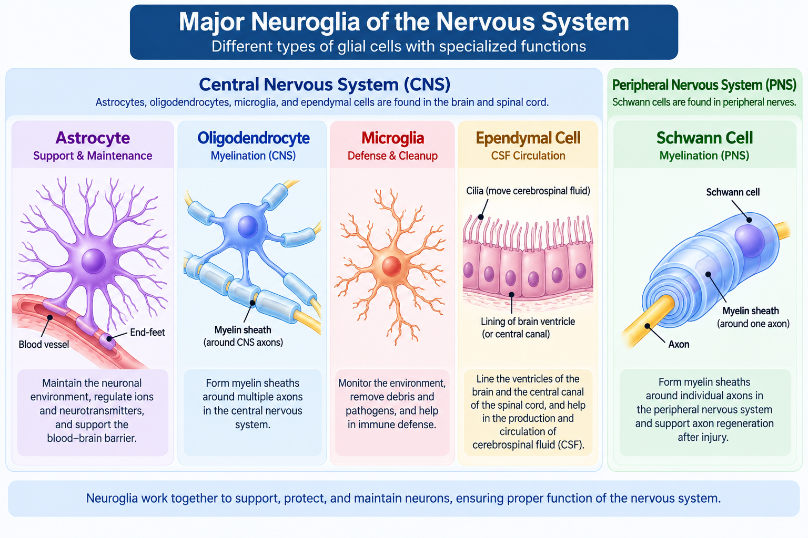
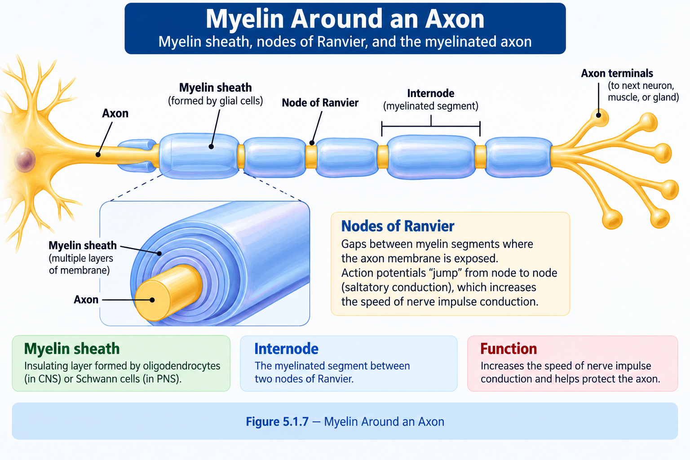
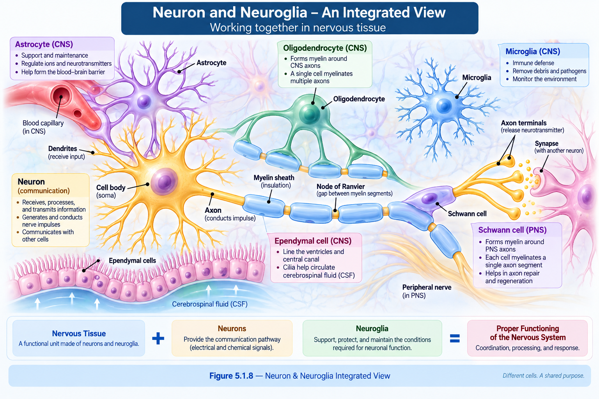

Nervous tissue contains two major cellular components: neurons, which specialize in communication, and neuroglia, which support, protect, and maintain the environment in which neurons function.
📑 Table of Contents
🎯 Learning Objectives
After completing this lesson, you should be able to:
- Identify neurons and neuroglia as the two major cellular components of nervous tissue.
- Describe the basic structure of a neuron.
- Identify the major parts of a neuron.
- Explain the general direction of information flow through a neuron.
- Distinguish sensory, interneuron, and motor neurons.
- Describe the general roles of neuroglia.
- Identify major glial cells of the CNS and PNS.
- Explain the basic role of myelin.
📖 Introduction
Nervous tissue is specialized for receiving, processing, and communicating information. It is found throughout the central and peripheral nervous systems.
Two major cell classes make up nervous tissue: neurons and neuroglia.
Neurons are specialized for communication, while neuroglia provide the support and environment required for neurons to function effectively.

📌 Simple Idea
Nervous tissue → Neurons + Neuroglia
⚡ The Neuron
Neurons are specialized cells that communicate information within the nervous system.
A typical neuron contains a cell body and extensions called processes. The major processes are dendrites and an axon.
Dendrites
Usually receive information from other cells.
Cell Body
Contains the nucleus and supports the cell's metabolic activities.
Axon
Carries signals away from the cell body toward target cells.
Axon Terminals
Communicate with another neuron, muscle, or gland.
📌 Remember
Neuron = Cell Body + Dendrites + Axon
🔬 Structure of a Neuron
The structure of a neuron is closely related to its role in receiving and communicating information.
Cell Body / Soma
Contains the nucleus and most of the cell's major organelles.
Dendrites
Usually receive incoming information from other neurons or sensory structures.
Axon
Carries signals away from the cell body toward target cells.
Axon Terminals
Form communication points with target cells.

➡️ Direction of Information Flow
In the basic model of a neuron, information generally moves from the dendrites toward the cell body and then along the axon toward its target.

🧠 Memory Cue
Receive → Process → Conduct → Communicate
🧩 Functional Types of Neurons
Neurons can also be classified according to the direction and role of information they carry.
Sensory / Afferent
Carries information from sensory receptors toward the central nervous system.
Receptor → CNSInterneuron
Processes and relays information primarily within the central nervous system.
CNS → CNSMotor / Efferent
Carries commands from the central nervous system toward effectors.
CNS → Effector
📌 Remember
Sensory → CNS → Motor
🛡️ Neuroglia
Neuroglia, also called glia or glial cells, are the supporting cells of nervous tissue.
They help maintain the environment around neurons and perform important support, protection, maintenance, and insulation functions.
Support
Helps maintain the structural and functional environment around neurons.
Protection
Contributes to protection and maintenance of nervous tissue.
Maintenance
Helps maintain conditions needed for normal neuronal function.
Insulation
Some glial cells form myelin around axons.

📌 Simple Idea
Glia → Support + Maintain + Protect
🧠 Major Glial Cells
Different types of glial cells perform specialized roles in the central and peripheral nervous systems.
| Glial Cell | Main Role |
|---|---|
| Astrocytes | Support neurons and help maintain the extracellular environment. |
| Oligodendrocytes | Form myelin around axons in the CNS. |
| Microglia | Provide immune surveillance and phagocytic functions. |
| Ependymal Cells | Associated with the ventricular system and cerebrospinal fluid. |
| Schwann Cells | Form myelin around axons in the PNS. |
Oligodendrocytes
Schwann cells

⚡ Myelin & Neural Support
Myelin is an insulating layer associated with many axons. It is produced by specialized glial cells in the nervous system.
CNS
Oligodendrocytes
Form myelin around CNS axons.PNS
Schwann Cells
Form myelin around PNS axons.
🔗 Bridge to Lesson 5.2
Axon + Myelin → Foundation for understanding nerve impulse and action potential
🧠 Neuron vs Neuroglia
The simplest way to distinguish the two major cellular components of nervous tissue is by their primary roles.
| Feature | Neuron | Neuroglia |
|---|---|---|
| Primary role | Communication | Support and maintenance |
| Main function | Receive and transmit information | Support, protect, maintain, and insulate |
| Examples | Sensory, interneuron, motor neurons | Astrocytes, oligodendrocytes, microglia, Schwann cells |
🔄 Putting It Together
Neurons and neuroglia work together as components of nervous tissue. Neurons provide the communication pathway, while neuroglia help create and maintain the conditions required for that communication.

📌 Key Takeaways
Neurons are specialized cells for nervous-system communication.
The basic neuron is organized around the dendrites, soma, axon, and axon terminals.
Functional neuron types include sensory, interneuron, and motor neurons.
Neuroglia support, protect, maintain, and insulate nervous tissue.
Oligodendrocytes form myelin in the CNS, while Schwann cells form myelin in the PNS.
❓ Practice Quiz
Test your understanding of neurons and neuroglia.
🧬 Neurons & Neuroglia Practice Quiz
Questions and interactive quiz logic will be added here.